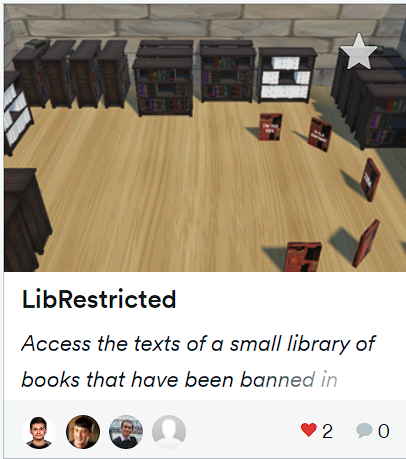
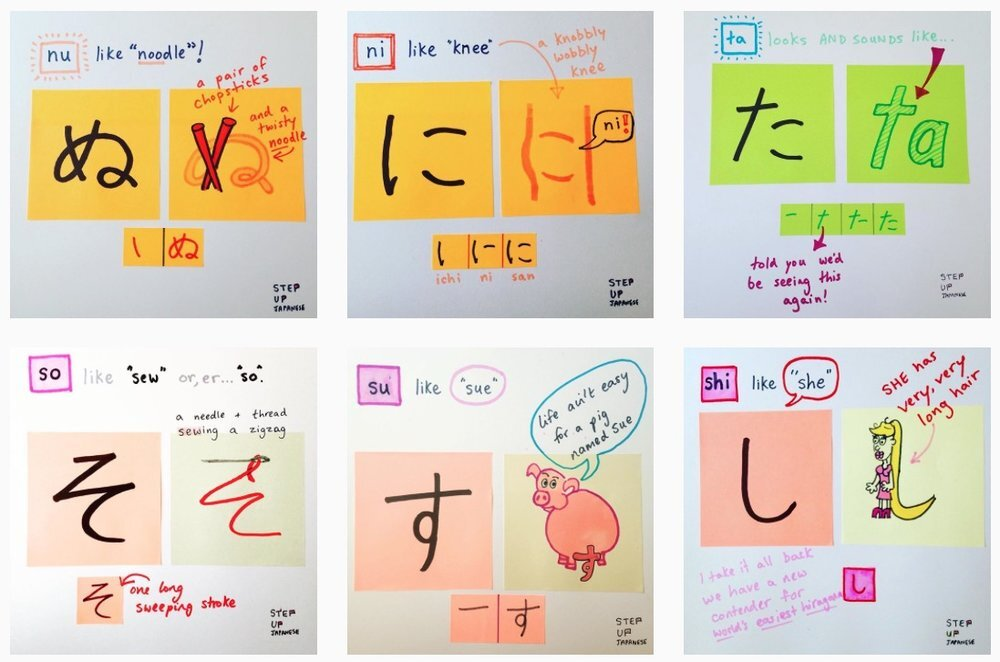
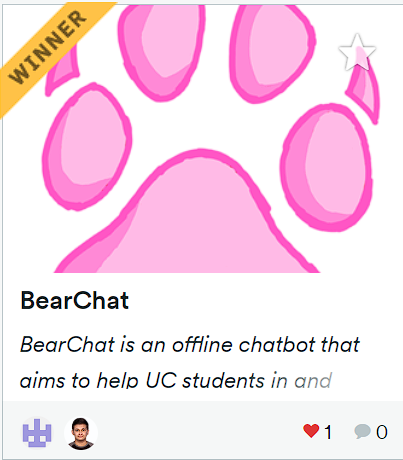

As I reflect on the past year, I am filled with an immense sense of pride and accomplishment. The year 2022-2023 has been a transformative journey, both personally and professionally, marked by a multitude of extraordinary experiences and significant personal growth. In this comprehensive year-in-review, I will take you through the remarkable moments and noteworthy achievements that have shaped my path and propelled me forward.
Let me begin by highlighting one of the standout moments of the year – my participation in the MakeUC Hackathon. Joined by a team of four exceptionally talented individuals, we embarked on a remarkable project that would make a lasting impact. Our endeavor involved the development of a virtual library utilizing Unity Game Developer and C#. The objective was to make educational books, which were previously inaccessible to the citizens of the United States, available to the public. Through this captivating journey, not only did I acquire invaluable knowledge in game development, but I also discovered a newfound fascination with various subjects explored within these books. It was an immensely gratifying experience to create something that had the potential to enhance knowledge and make a positive impact on the lives of others.

Another pivotal milestone in my journey of personal and professional growth was the COOP 1000 course. This extraordinary course revolutionized my perspective as a computer science student, equipping me with essential skills that have had a profound impact on my journey. Among these vital skills were effective communication, problem-solving prowess, and impeccable time management. Moreover, the course emphasized the significance of setting realistic goals and breaking down seemingly insurmountable challenges into smaller, manageable tasks. This newfound knowledge instilled in me an unwavering sense of confidence and determination, making me realize that with dedication and perseverance, I possess the ability to achieve greatness in my chosen career field.
In addition to my academic pursuits, I embarked on a personal odyssey to learn the beautiful Japanese language. Fueled by my unwavering interest in Japanese culture and my passion for anime, I undertook the remarkable journey of learning Japanese to expand my horizons and deepen my understanding of a different culture. With the aid of various online resources and courses offered by the esteemed University of Cincinnati, I delved into the intricacies of mastering Hiragana and Katakana, laying a solid foundation for my future language explorations. This endeavor not only sharpened my communication skills but also nurtured a profound appreciation for the rich tapestry of Japanese culture.

Participating in the highly anticipated Rev UC Hackathon was yet another significant milestone that fortified my journey of growth and achievement. During this immersive experience, I devoted my skills to the creation of an ingenious voice assistant specifically tailored for UC students, which we fondly named BearChat. This remarkable project served as a testament to my expertise in machine learning, natural language processing, and web development. Leveraging the power of Python and employing a plethora of cutting-edge machine learning techniques, I successfully crafted a comprehensive voice assistant capable of providing real-time weather updates, precise time information, user location data, text-to-speech functionality, and even detailed building information for the prestigious University of Cincinnati. The recognition and accolades bestowed upon our project for the best use of Google APIs validated the extensive knowledge and expertise I had cultivated in my chosen field of study.

Beyond the realms of academia, I had the distinct honor of being an integral part of the esteemed National Residence Hall Honorary (NRHH). Immersing myself in this incredible organization provided me with unparalleled opportunities to contribute meaningfully to the residential community and create life-changing experiences for my fellow students. As a passionate advocate for the needs and concerns of international students, I worked tirelessly to foster inclusivity and promote cultural exchange on campus. My dedication and unwavering commitment were acknowledged, and I subsequently applied for an executive board position. With great delight, I was accepted as the Director of Values for the upcoming Fall 2023 semester. This tremendous opportunity fills me with immense enthusiasm as I eagerly anticipate the chance to continue contributing to the organization's growth and making a positive impact within the residential community.
Looking ahead, I am brimming with excitement and an insatiable thirst for new opportunities and challenges that lie on the horizon. Building upon the strong foundation I have established; I intend to seize every chance to further my personal and professional growth. The experiences of the past year have indubitably transformed me into a more confident, resilient, and well-rounded individual. I am grateful for the tremendous growth and accomplishments I have achieved, and I remain resolute in my determination to continually push the boundaries of my potential and reach new heights in all my future endeavors.
In conclusion, the year 2022-2023 stands as a pivotal period characterized by profound personal growth and remarkable achievements. From participating in awe-inspiring hackathons to broadening my cultural horizons, each experience has contributed to my overall development as an individual. I am grateful for the countless opportunities that have graced my path and the invaluable lessons I have learned along this remarkable journey. The year gone by has laid the groundwork for a future brimming with endless possibilities, and I embark upon the upcoming chapter of my life with unwavering excitement and anticipation.